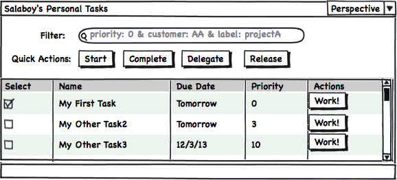
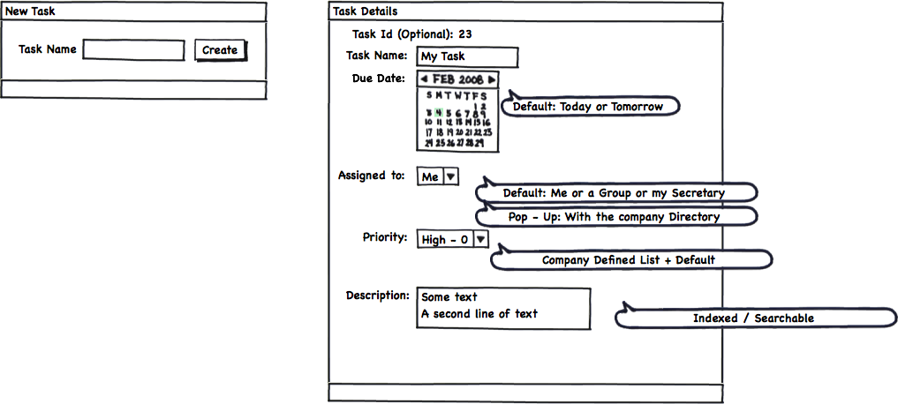
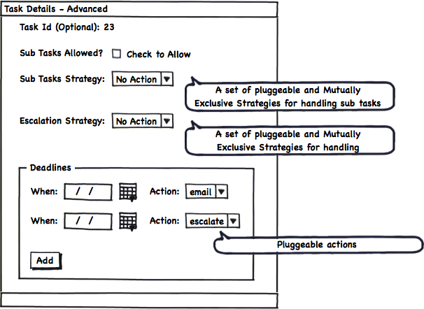
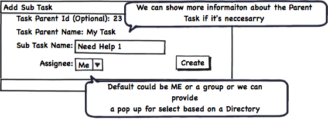
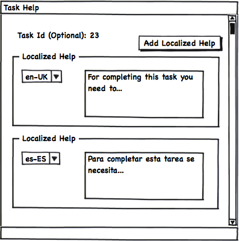
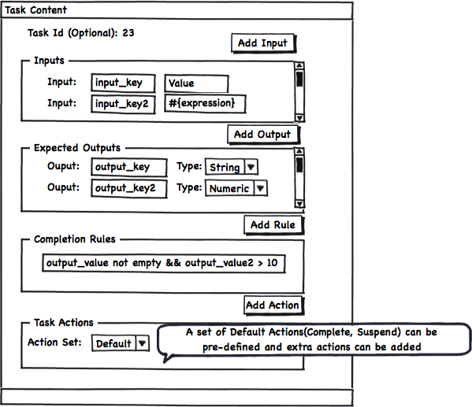
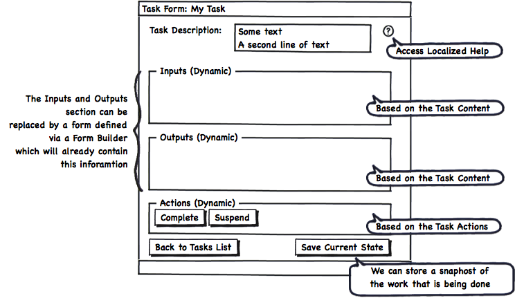
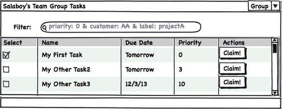
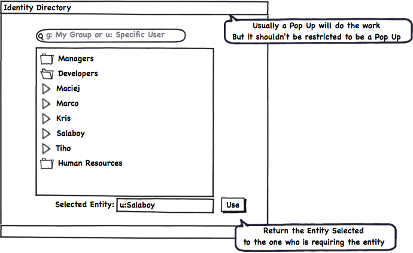

Human Interactions: Task List UIs Requirements
Most of the times the Front Ends Applications which are built on top of Process Engines contains a fair amount of screens/components dedicated to deal with Human Interactions. On this post the requirements to build these panels will be dissected to define which bits are important. The main idea behind this analysis is to be able to evolve the current state of art of the Human Interactions screens/components to the next level.
State of the Art
Nowadays most of the BPM Suites offers the following set of screens:
- Inbox – (Personal) Task Lists
- Task Creation
- Task Details
- Sub Tasks
- Task Help
- Task Content
- Task Forms
- Group Task Lists
- Identity related screens
Let’s dive into each of these categories in order to understand in details what is required in each of them:
Inbox a.k.a. Personal Task List
This is the main screen for a User to interact. This screen will contain a list or a data grid which will display all the pending tasks for the currently logged in user. The following image describe in detail the key bits:

- Personal Task List (Inbox)
This screen is usually compared with the Inbox folder of any Email Client application where per each mail we have a row and in order to see the content of the email we need to drill down into each item.
It is not necessary to explain each button and piece of information that is being displayed in the previous picture but for the sake of this analysis we can divide the features into two big groups:
Basic Features
A set of Basic Features can be quickly coded based on the mechanisms provided by the Engine:
- All the pending tasks for the user
- Generic data about those tasks (Columns)
- A set of actions to interact with each task (also bulk actions as displayed in the image)
All these features will represent the basic pieces that needs to be provided by the, but on top of those bits a set of user customizations needs to be allowed by the tool.
Domain Specific & Usability Features
In order to adopt a Generic Task List interface most of the companies requires a high degree of customization on top of the basic set of features provided by the tools. Most of these customizations are domain specific and are extremely difficult to provide in a generic way. But what we can provide, as tools designers, is several layers of flexibility to allow each company to modify and adapt the generic tooling to their needs.
Specifically for Task Lists these custom features can be:
- Filter/Search by generic and domain specific data inside or related with the tasks
- Define Labels and Label Tasks
- Define different perspectives to display the same information. For example: Number of Columns to Display, Default Sorting, etc
- User defined graphical annotation and comments,
- User defined timers and alerts
- Find other users associated with each task and use different communication channels to get things done, etc
- User defined Meta-Data for future analysis
I can list a very extensive list of features that can be added, but we need to be careful and be focused on the features that will make our task lists/inbox usable and not more difficult to use.
So there is an extra factor that we need to consider, and that factor is how the end users want interact with our software. The cruel reality is that there is no single answer, we need to provide an infrastructural framework flexible enough to allow each user to customize his/her experience in front of the software. Each user will need to be able to add or limit the set of features that they want to use. The company need to know that if there is a feature missing, the learning curve to add it is almost none and the developers needs to be comfortable with how these additions or removals are done.
Task Creation & Task Details
If we do a similar analysis for the screens intended to allow the user to create a new task or to modify an existing task we will start finding a lot of repeated requirements.
The following figure shows a set of screens that are usually involved in the Task Creation and Task Details Edition process:

- Task Creation + Task Details
The previous figure shows a very simple and fluid mechanism to quickly create new Tasks.
In order to create a task we just need a name and all the rest of the properties will be defaulted based on global or the user configurations.
If we want to edit the task basic properties we will have a different panel with the most common things that the user will want to change, like for example: Due Date, Priority and Assignment.
Advanced Details
More advanced options can be displayed separately and only if the User wants to see them:

- Advanced Task Details
Sub Tasking strategies, Deadlines and Escalation Options can be shown if they are needed. There are cases when these advanced behaviors are not required, and for that reason they should be all optional at the UI level.
Sub Tasks
If Sub Task are allowed by Default a separate panel embedded in the Task Details view can be added to allow the quick creation of subtasks that are related with a specific parent Task.

- Adding Sub Tasks
Once the Sub Task are created, they can be edited via the normal panels, which will probably add the reference to the parent Task and some bits of extra information (like for example the parent task name and assignee for reference).
Task Help
Something that we usually leave to the end is the Help feature. As you can see in the following figure, with a very simple panel we can write a set of localized help texts which will guide to the person that needs to work in such task. For simple Tasks, the help can be avoided, but for more complex tasks, such as legal, medical, government tasks which usually contains CODEs and regulations this can be very useful.

- Task Contextual Help
Task Content
One very important aspect of every task is the information that the task will handle and how this information will be exposed to the user and how the UI will gather the required input from the user.
For this reason we will need a way to define the Task Input Data and The Task Output data.

- Defining Task Content
The Task Inputs represent all the information that will be displayed and is required by the user in order work on the task. The Task Ouputs are the data that the user must enter in order to complete the particular task.
As extension points we can also add a set of Completion Rules that will need to be validated in order to automatically decide if all the data is coherent and the task can be successfully completed or if the user will be pushed to add more or modify the current information.
In the same way we can define a simple mechanism to define which actions will be available for each specific task. Creating a set of Default set of actions the user just can select between different groups of standard actions that will be rendered inside the Task Form.
Most of the time, if our task is in the context of a Business Process, the Task Inputs and Task Outputs can be inferred by the process data mappings specification around the Task.
Task Inputs and Outputs can also be defined by using a Form Builder which can aggregate information from different places and allows us to have a more flexible way of defining the information that will be handled by the task. A mixed approach is also valid.
It’s important to understand that Task Inputs and Outputs are vital to handle complex tasks that are in some way standard to the company and are executed multiple times. For a simple TODO task, which will merely serve as a reminder to ourselves, we can avoid adding such complexity. The idea of Inputs and Outputs also make more sense when we are creating a Task that will be executed by a different person who doesn’t fully understand the goal of the task. Specifying the Inputs and Outputs we will be formalizing the task expected results as well as the required information needed to do the expected work.
Task Forms
The final goal of Task Lists and all the previously introduced panels is to help and guide the users to do their work. In order to do the work, the users needs to interact with we usually as a Task Form. The most simplistic and generic representation of a Task Form can be the one shown in the following figure:

- Generic Task Form Structure
There are no limitation on how the Task Form needs to look like, but it will usually contain the information displayed in the previous figure. Most of the information that will be displayed is based on the Task information that we have stored and the graphical arrangement of components that we can do using Form Builder tool. No matter the technique that we use, it’s important to highlight that there is no good or bad way of structuring the information. We can say that we did a good job if the user who is interacting with the task:
- Have all the information required to work
- Is not delayed by the tool
- Doesn’t feel that there are too many options that are not used in the normal course of actions
Group Task Lists
As you may know most of the Task Lists systems also provide the possibility of showing in a separate list all the tasks assigned to the groups were a certain user belongs. The tasks displayed in this list are not assigned to any person in particular, but they can be claimed. So, let’s say that you don’t have any task to do today, you can go to the Group Tasks list and claim a task from there. Once you claim the task, the task is automatically assigned to you and no one else can work on it. For this specific kind of tasks you will have a specific Task Action to release it if you can no longer work on it. As soon as you release the task, the task is placed again into the group tasks and anyone inside that group can claim it.

- Group Task Lists
There are sometimes when we will want to display both lists in the same screen which make total sense if the user wants to have a quick overview about the overall work load related to him/her.
Identity Related Screens
All the identity information is usually handled by a separate component and it is usually central to the company. From the UI Perspective is important to have a set of simple tools which allows us to query the company directory and relate a User to a Task or query for Groups to be able to assign a Task.

- Identity Utility
One important thing here is to notice that this panel depends on the underlaying technology used to contain the Identity information. If your company uses Active Directory or LDAP or a Database this component will need to be adapted to connect to your Identity Directory and consume data from it. There is no single generic solution that fits all the environments.
Get Involved
If you think that all the features described here are important, or if you are planning to adopt a solution like the one described in this post please get involved and share your thoughts and extra requirements that you may need. I will start sharing my personal experiments on the basic components exposed in this post. This is a very good opportunity to join forces and help in the creation of these components. If you wanna help and learn in the process please write a comment here or contact me via the public jBPM5 channels. The more requirements that we can gather, more re-usable will be the end results.
Summary
This post cover what I believe are the most important bits that every Task Lists Oriented Software should provide. I’m not saying that these features are enough but this post will serve as the starting point for more advanced mechanisms to improve how the work is being done. I’ve intentionally left out of this post two important topics: the Form Builder and Task Statistics and Reporting. Both topics will be covered in future posts. Now that you reach the end of the post please read again the “Get Involved” section and drop us a line with your comments/suggestions.

{kind=link}
{kind=link}
{kind=link}
{kind=link}
{kind=link}
{kind=link}
{kind=link}
{kind=link}
{kind=link}